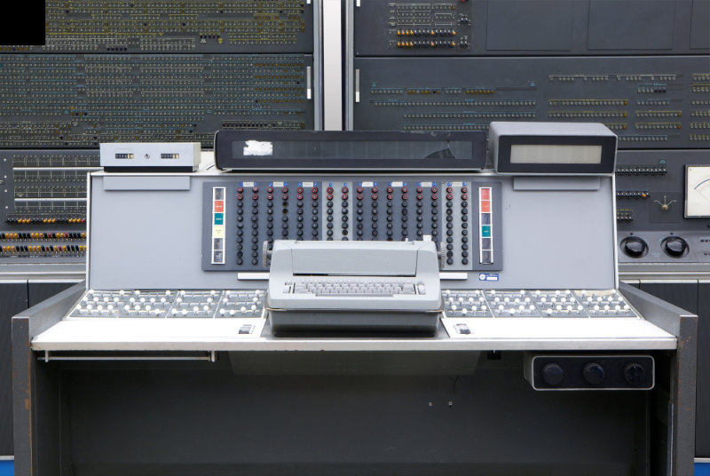

Komputer
Sejarah Komputer
Komputer pertama kali ditemukan pada 1822 oleh seorang ahli matematika asal Inggris, Charles Babbage. Mulanya, Babbage bermaksud untuk menciptakan sebuah mesin hitung bertenaga uap yang dapat menghitung tabel angka.
Generasi Komputer
Komputer terdiri atas 5 generasi generasi pertama disebut tabung vakum Pada tahun 1946, komputer diciptakan melalui tabung vakum sebagai komponen utamanya dan beratnya sendiri hampir 30 ton. Namun, hal ini sangat tak efisien karena membutuhkan daya listrik yang besar serta panas yang berlebihan.
Generasi 1
Generasi pertama ini juga masih dapat menggunakan bahasa mesin yang hanya dapat dimengerti oleh komputer itu sendiri. Inputnya juga menggunakan sebuah pita kertas dan punched card dengan output berupa printer. Pada waktu tertentu juga membutuhkan sekitar 1 juta dollar hanya untuk mendapatkan suatu program. Program tersebut dibuat dalam bahasa mesin. Program Menggunakan konsep storage program.
Generasi 2
Generasi kedua generasi transistor teknologi transistor sebagai komponen utama.Generasi ini sendiri mulai digunakan pada tahun 1959 sampai tahun 1965. Beberapa kelebihan yang dimiliki diantaranya adalah ukuran yang lebih kecil, tak terlalu panas, serta risiko mengalami kegagalan cukup kecil. Generasi ini juga sudah tidak lagi menggunakan berbagai bahasa mesin seperti sebelumnya. Digantikan juga dengan menggunakan bahasa FORTRAN serta bahasa COBOL. Oleh sebab itu, dapat dikatakan bahwa komputer transistor tentu masih jauh lebih baik jika dibandingkan dengan tabung vakum.
Generasi 3
Generasi ketiga generasi IC Bentuk transistor pada komputer ini diperkecil dan diletakkan pada IC bersamaan dengan beberapa resistor serta kapasitor. Komputer generasi ini pertama kali dikembangkan oleh Jack Kilby yang merupakan seorang insinyur listrik. Kelebihannya komputer generasi ini kecepatannya yang cukup efisien. Selain itu, komputer generasi ini merupakan komputer yang pertama kali menggunakan monitor serta keyboard.
Generasi 4
Generasi ke empat Generasi Mikroprosesor,Generasi mikroprosesor pertama kali dibuat oleh IBM pada tahun 1971. Kemudian, pada tahun 1984, perusahaan Apple merilis Macintosh. Sejarah komputer serta perkembangannya selanjutnya memasuki masa mikroprosesor yang mana masih digunakan oleh beberapa masyarakat Indonesia hingga saat ini. Bersamaan dengan generasi mikroprosesor ini, lahirlah juga internet. Tampilan monitornya juga masih menggunakan satu warna atau green color. Selain itu, dikembangkan juga sebuah chip sebagai memori komputer. Seiring dengan berkembangnya waktu, para pakar mencoba untuk melengkapi apa-apa yang belum ada yaitu PC-Compatible. Dengan adanya generasi ini membuat istilah PC mulai bermunculan. Selain itu, ada perangkat yang mulai dikembangkan untuk perorangan, sehingga mudah dibawa kemana-mana yaitu pada laptop.

Generasi 5
Generasi ke lima Generasi AI Generasi yang terbaru dari perkembangan komputer adalah munculnya teknologi bernama AI yang memiliki kecerdasan buatan, sehingga dapat melakukan input dengan lebih baik. Bahkan, generasi ini juga disebut juga sebagai komputer masa depan. Kemudian, dikembangkanlah oleh intel serta microsoft yang diprakarsai oleh Bill Gates dan merupakan pionir dari standar hardware dan software di seluruh dunia. Generasi AI yang terbaru adalah komputer Pentium Empat yang dikeluarkan oleh Intel Corporation.

Handphone
Sejarah Handphone
Sejarah handphone itu sendiri sebenarnya dibagi menjadi empat generasi yang di mana generasi pertama merupakan telepon selular ciptaan Martin Cooper.
Generasi 1
Telepon genggam atau handphone pada generasi pertama ditemukan pada tahun 1973 dan penemunya adalah Martin Cooper. Pada generasi pertama ini telepon genggam sering disebut juga dengan generasi 1G dan dikenal juga dengan istilah AMPS (frekuensi antara 825 Mhz hingga 894 Mhz). Oleh karena itu, telepon genggam generasi ini bisa dibilang bersifat analog.
Generasi 2
Generasi berikutnya adalah generasi kedua (sekitar tahun 1990-an) dari sejarah perkembangan handphone atau telepon genggam. Teknologi yang semakin maju membuat telepon genggam generasi ini semakin canggih. Kecanggihan itu terlihat pada penggunaan chip pada telepon genggam dan menggunakan teknologi 2G. Generasi telepon genggam ini diperkirakan muncul sekitar tahun 1990-an. Pada saat itu, negara Amerika Serikat sudah menggunak tekonologi CDMA(Code Division Multiple Access). Sementara itu, di Eropa menggunakan teknologi GSM GSM (Global System for Mobile Telecommunications).
Generasi 3
Memasuki tahun 2000-an berarti memasuki telepon genggam generasi ketiga yang di mana penggunaan teknologi semakin canggih, yaitu 3G. Dengan penggunaan teknologi 3G, maka jangkauan sinyal pada telepon genggam semakin luas, sehingga komunikasi semakin nyaman. Pada dasarnya dalam dunia telekomunikasi sinyal 3G ini terdapat 3 standar, yaitu EDGE (Enhanced Data Rates for GSM Evolution), Wideband-CDMA, dan CDMA 2000. Tidak hanya itu, telepon genggam generasi ketiga mulai dimasukkan beberapa sistem operasi, sehingga sering dikenal sebagai smartphone atau ponsel pintar.

Generasi 4
Generasi terakhir dari perkembangan telepon genggam adalah generasi IV atau lebih dikenal dengan teknologi Fourth Generation (4G). Selain itu, teknologi yang ditawarkan pada telepon genggam generasi ini berupa dapat terhubung teknologi nirkabel, seperti Wireless Broadband (WiBro), 802.16e, CDMA, wireless LAN, Bluetooth, dan sebagainya. Oleh karena itu, pengguna yang menggunakan telepon genggam generasi ini akan mendapatkan beberapa keuntungan, seperti pengguna bisa menggunakan sistem operasi kapan saja, memiliki kecepatan tinggi, jangkauan sinyal bisa mencapai global, dan lain-lain. Bahkan, pengguna bisa bermain game secara online, menonton film, hingga menggunakan fitur multimedia lainnya.